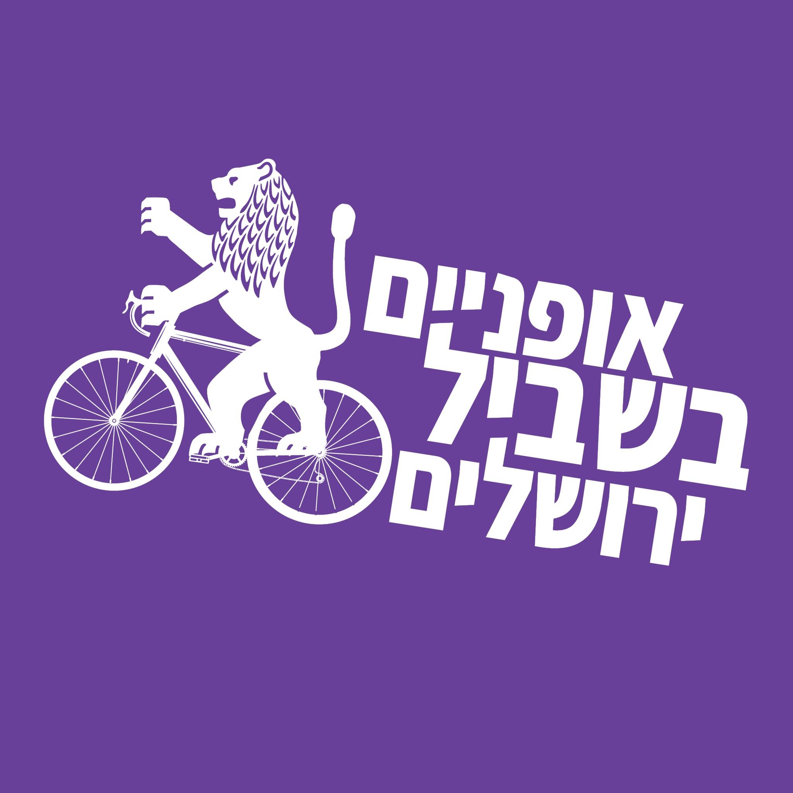

קמפיין גיוס 2026
התקדמות לאורך זמן
התפלגות גודל התרומה
אודות
אופניים בשביל ירושלים הוא ארגון פעילים שפועל ב־100% בהתנדבות. כל הפעילות שלנו — להגיע לפגישות בעירייה, לארגן רכיבות מחאה, להוציא כתבות ופוסטים — הכל נעשה על בסיס פעילים שתורמים את זמנם ואת מרצם כדי לייצר פה עיר טובה יותר לכולנו, וזה תמיד היה המשאב החשוב ביותר שלנו.
אבל אנחנו גם צריכים בסיס כלכלי בסיסי — כדי להכין חומר לישיבות מול גורמי תכנון, כדי לייצר פרסום שמביא עוד אנשים, כדי להוציא רכיבות גדולות וטובות יותר. אנחנו תמיד גאים בכך שאנחנו יודעים לעשות הרבה מאוד עבודה במעט מאוד משאבים — אבל את המעט הזה אנחנו כן צריכים, וכל תרומה תאפשר לנו לחזק את קהילת האופניים בעיר ולהשמיע קול חזק יותר בעד עיר ידידותית יותר לאופניים.
לא כולם תמיד יכולים לבוא להתנדב, זה ברור. אבל פשוט תשאלו את עצמכם — כמה שווה לכם השביל אופניים הזה שהייתם רוצים לראות בדרך לעבודה, ללימודים, לסופר? בואו לעזור לנו לגרום לו לקרות.
שאלות ותשובות
מה השגנו בשנים האחרונות?
שבילי אופניים — שביל האופניים בגולומב נולד מהתעקשות שלנו, כמו גם פיילוטים של שבילי צבע ברחביה, שבשבועות הקרובים עומדים להיות מורחבים.
מה אנחנו בעצם עושים?
אנחנו, באופן פשוט, ארגון מתנדבים שמקדם את תחבורת האופניים בעיר, ופועלים במגוון אמצעים:
- ארגון רכיבות קהילתיות — מסות קריטיות של רוכבים שנועדו גם להפגין את הנוכחות שלנו בעיר וגם לגבש קהילה של פעילים.
- קמפיינים ממוקדים.
- פעילות במדיות חברתיות כדי להעלות את המודעות לתחבורת אופניים.
- פגישות עם גורמי עירייה ונבחרי ציבור, כדי לקדם עוד שבילי אופניים ולדאוג שהם מתוכננים כמו שצריך.
על מה בעצם הכסף יוצא?
אין לנו הוצאות קבועות, אבל אם לחלק את ההוצאות לקטגוריות עיקריות, אלו יהיו:
- פרסום — הדפסות של פליירים, פוסטרים וכל הדברים שאנחנו עושים כדי לשווק את הרכיבות. אם היה לנו עוד תקציב, היינו שמחים להשקיע יותר באמצעי פרסום מתקדמים יותר ולהגיע לעוד אנשים, או להרים אתר מסודר.
- רכיבות — מגפונים, דגלים, וסטים, מכונות בועות + מטענים. זה הכל דברים קטנים, אבל זה מצטבר. כמו כן, להחזיר לאדם שקנה פיצות/בירות במקרה שיותר מדי אנשים שכחו לשלם, מה שקורה לפעמים (אל תשכחו לשלם על הבירות שלכם בבקשה). אם היה לנו עוד כסף, היינו שמחים להמשיך לשדרג את הרכיבות — לקנות מערכות סאונד טובות יותר, למשל.
- נושאי תכנון — הדפסה של מדריכים והסברים תכנוניים לטובת גורמי תכנון, הגשות של בקשות חופש מידע וכו'.
- פגישות פעילים — את רוב פגישות הפעילים שלנו אנחנו עושים בבתים פרטיים, אבל לפחות אחת לשנה אנחנו רוצים לעשות מפגש פעילים כלל־ארגוני ורחב, וזה מצריך שכירה של מקום וכיבוד וכו'.
למה לא לעשות קמפיין גיוס מסודר דרך הדסטארט / jgive?
בשורה התחתונה — אנחנו לא עמותה, ואין לנו חשבון בנק. כמובן שיש מספר עמותות שישמחו לארח אותנו, אבל זה יוצר אתגרים משלו מבחינת קבלות ושירותים — עמותה לא יכולה להוציא כסף על הזמנה של מקל דגל מעלי אקספרס, וגם מה שהיא כן יכולה להוציא עליו כסף יצריך תהליך של הגשת קבלות. לאחר דיון בין המתנדבים החלטנו שהדרך הזו יוצרת יותר בעיות מפתרונות, ושאנחנו יכולים להסתמך על התמיכה והאמון של הקהילה שלנו לסייע להמשך הפעילות שלנו באופן ישיר.
אז למה בעצם אתם לא עמותה בעצמכם?
התשובה מורכבת משלושה חלקים:
- העלויות של ניהול עמותה הן לא זניחות, הן מבחינה כספית והן מבחינת תשומת לב.
- הלב הפועם של הפעילות שלנו, הרכיבות הקהילתיות, הוא דבר שאפשר בקלות לארגן כקהילה שמתנדבת, אבל יהיה מורכב לקחת עליו אחריות כעמותה, ולמעשה כנראה יצריך להפריד את החלק של הרכיבות משאר הפעילות.
- אנחנו ארגון שבמהותו הוא אוסף יוזמות של אנשים, ואף אחד לא לקח יוזמה ועשה את זה עדיין :)
צריך להגיד שעדיין מדובר בדיון מתמשך בתוך הארגון. יש המון דברים שאנחנו נוכל לעשות בתור עמותה מסודרת שאנחנו לא יכולים לעשות היום, עם תקציב משמעותי שאנחנו מאמינים שאנחנו כן נוכל לגייס אם ניכנס לכך בכל הכוח — ניהול אוטובוסי אופניים בכלל העיר, העסקת מתכננים לטובת איתגור של תוכניות העירייה, לובי מסודר בכנסת לטובת רוכבי אופניים בכלל הארץ. אנחנו נרצה בהמשך השנה לעשות על כך מפגש פעילים כלל־ארגוני, ואם אתם רוצים לקחת חלק בדיון הזה — בואו תצטרפו!